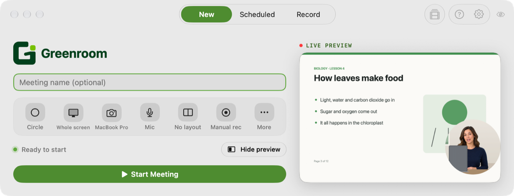

02 · The main window
Three ways to begin, one button

Hosting
New
A fresh meeting on your Zoom account, you as host. Start Meeting; End ends it for everyone after one confirming click.
Hosting
Scheduled
Your Zoom account's meetings: start, create or edit one. Host-only, no guest join; to join someone else's meeting use the Zoom app.
No meeting
Record
Your screen with you in it. No meeting, no Zoom account. Start Recording, then a bar with Notes. Then Get feedback.
Setup
The tiles
- Look: bubble shape and background.
- Camera: cameras and cut order, or none; with two or more, switching delay and Cut or Crossfade.
- Screen: whole screen, a window, the whiteboard, or just you.
- Mic: system default or a device; record the Mac's sound or not.
- Layout: pick one, show it or open its apps; locked while live.
- Auto-rec: with the meeting or on demand; clip buffer; where recordings go.
- More: each Settings tab, the Setup guide, all settings.
During
While the meeting runs
- End asks in one click (below).
- Sessions (clock icon): sidebar, timeline by day, Watch or Edit; see Recordings & clips.
- Status: the log under the button says what each step did and why.
Help
The ? button
Reopens the seven-page setup guide: Sign in with Zoom, Zoom setup checks for your own apps, the permission checklist.
The control bar and the one-click End